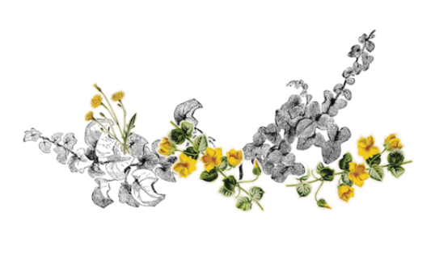

Charlotte Perkins Gilman
It is very seldom that mere ordinary people like John and myself secure ancestral halls for the summer.
A colonial mansion, a hereditary estate, I would say a haunted house, and reach the height of romantic felicity--but that would be asking too much of fate!
Still I will proudly declare that there is something queer about it.
Else, why should it be let so cheaply? And why have stood so long untenanted?
John laughs at me, of course, but one expects that in marriage.
John is practical in the extreme. He has no patience with faith, an intense horror of superstition, and he scoffs openly at any talk of things not to be felt and seen and put down in figures.
John is a physician, and PERHAPS--(I would not say it to a living soul, of course, but this is dead paper and a great relief to my mind)--PERHAPS that is one reason I do not get well faster.
You see he does not believe I am sick!
And what can one do?
The paint and paper look as if a boys’ school had used it. It is stripped off--the paper--in great patches all around the head of my bed, about as far as I can reach, and in a great place on the other side of the room low down. I never saw a worse paper in my life.
One of those sprawling flamboyant patterns committing every artistic sin.
It is dull enough to confuse the eye in following, pronounced enough to constantly irritate and provoke study, and when you follow the lame uncertain curves for a little distance they suddenly commit suicide--plunge off at outrageous angles, destroy themselves in unheard of contradictions.
The color is repellent, almost revolting; a smouldering unclean yellow, strangely faded by the slow-turning sunlight.
It is a dull yet lurid orange in some places, a sickly sulphur tint in others.
It creeps all over the house.
I really have discovered something at last.
Through watching so much at night, when it changes so, I have finally found out.
The front pattern DOES move--and no wonder! The woman behind shakes it!
Sometimes I think there are a great many women behind, and sometimes only one, and she crawls around fast, and her crawling shakes it all over.
Then in the very bright spots she keeps still, and in the very shady spots she just takes hold of the bars and shakes them hard.
And she is all the time trying to climb through. But nobody could climb through that pattern--it strangles so; I think that is why it has so many heads.
They get through, and then the pattern strangles them off and turns them upside down, and makes their eyes white!
And though I always see her, she MAY be able to creep faster than I can turn!
Hurrah! This is the last day, but it is enough. John is to stay in town over night, and won’t be out until this evening.
As soon as it was moonlight and that poor thing
began to crawl and shake the pattern, I got up and ran to help her.
I pulled and she shook, I shook and she pulled, and before morning we had peeled off yards of that paper.
A strip about as high as my head and half around the room.
And then when the sun ame and that awful pattern began to laugh at me, I declared I would finish it to-day!
This bedstead is fairly gnawed!
But I must get to work.
I have locked the door and thrown the key down into the front path.
I don’t want to go out, and I don’t want to have anybody come in, till John comes.
I want to astonish him.
I’ve got a rope up here that even Jennie did not find. If that woman does get out, and tries to get away, I can tie her!
But I forgot I could not reach far without anything to stand on!
I don’t like to LOOK out of the windows even--there are so many of those creeping women, and they creep so fast.
I wonder if they all come out of that wall-paper as I did?
But I am securely fastened now by my well-hidden
rope--you don’t get ME out in the road there!
I suppose I shall have to get back behind the pattern when it comes night, and that is hard!
It is so pleasant to be out in this great room and creep around as I please!
I don’t want to go outside. I won’t, even if Jennie asks me to.
For outside you have to creep on the ground, and everything is green instead of yellow.
But here I can creep smoothly on the floor, and my shoulder just fits in that long smooch around the wall, so I cannot lose my way.
Why there’s John at the door!
It is no use, young man, you can’t open it!
How he does call and pound!
Now he’s crying for an axe.
It would be a shame to break down that beautiful door!
“John dear!” said I in the gentlest voice, “the key is down by the front steps, under a plantain leaf!”
That silenced him for a few moments.
Then he said--very quietly indeed, “Open the door, my darling!”
“I can’t,” said I. “The key is down by the front door under a plantain leaf!”
And then I said it again, several times, very gently and slowly, and said it so often that he had to go and see, and he got it of course, and came in. He stopped short by the door.
“What is the matter?” he cried. “For God’s sake, what are you doing!”
I kept on creeping just the same, but I looked at him over my shoulder.
“I’ve got out at last,” said I, “in spite of you and Jane. And I’ve pulled off most of the paper, so you can’t put me back!”
Now why should that man have fainted?
But he did, and right across my path by the wall, so that I had to creep over him every time!
But he did, and right across my path by the wall, so that I had to creep over him every time!